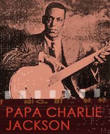

The first group of African-American performers to sing blues-like material were entertainers called songsters. Songsters established themselves in the decades following the Civil War and shared a common repertory with white performers that included nineteenth-century songs and ballads, dance songs, minstrel and dialect material, and the new ragtime songs as we move to the close of the century. Like many early country music performers, many songsters also worked medicine shows.
Songsters usually accompanied themselves on popular instruments of the day, such as banjo or fiddle. Over the early part of the twentieth century, they increasingly adopted the inexpensive and mass-produced guitar.
One of the first songsters to be recorded was Papa Charlie Jackson, who still accompanied himself on banjo. Jackson was born in New Orleans in the mid-1880s and entertained people at racetracks, fairs, and on tour with various traveling shows. He recorded gentler versions of more sexually explicit African-American folk material.
Papa Charlie Jackson's 1925 Chicago recording of "Shake That Thing" is made up of bits and pieces of lyrics that are found in many other songs at the time (called 'floating verses') and reflects an improvisatory process of assembly used by early blues singers. "Shake That Thing" was Jackson’s biggest hit and featured jazz stylings in his banjo playing, like stop-time_breaks, that were unusual for blues performances at the time.
Listen to Papa Charlie Jackson's "Shake That Thing."